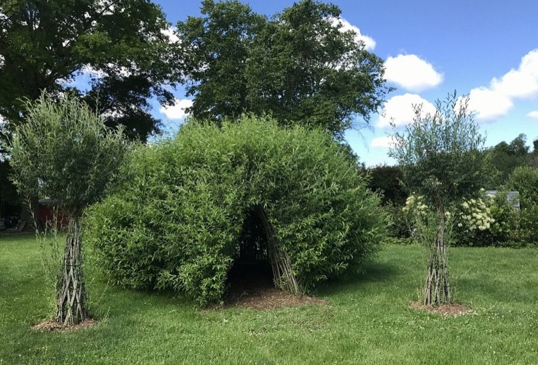
Featured
Tree Nets
Hand woven rope nets suspended between living trees: lounge, play, and stargaze in the canopy.
Central Pennsylvania · Altoona & Blair County
Native-plant gardens, edible food forests, and living willow structures designed to bring your land back to life, one season at a time.
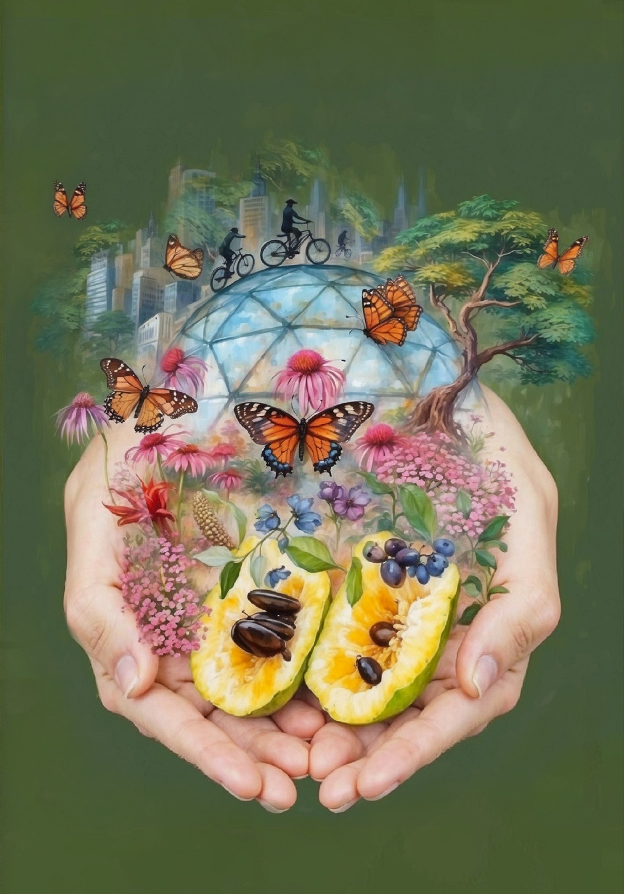
What we do
Every design starts with the native plants and living systems that belong here, then layers in beauty, food, and habitat for the pollinators and people who share your land. Explore all eleven ways we can help your ground come alive.

Featured
Hand woven rope nets suspended between living trees: lounge, play, and stargaze in the canopy.
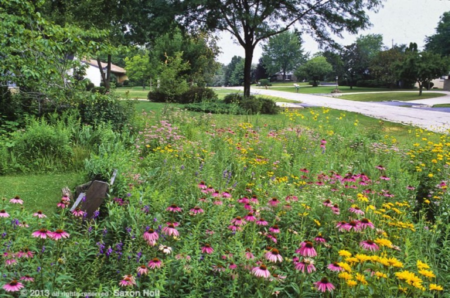
Featured
Turn a high-maintenance lawn into native meadow, potentially at no cost through the PA DCNR program.
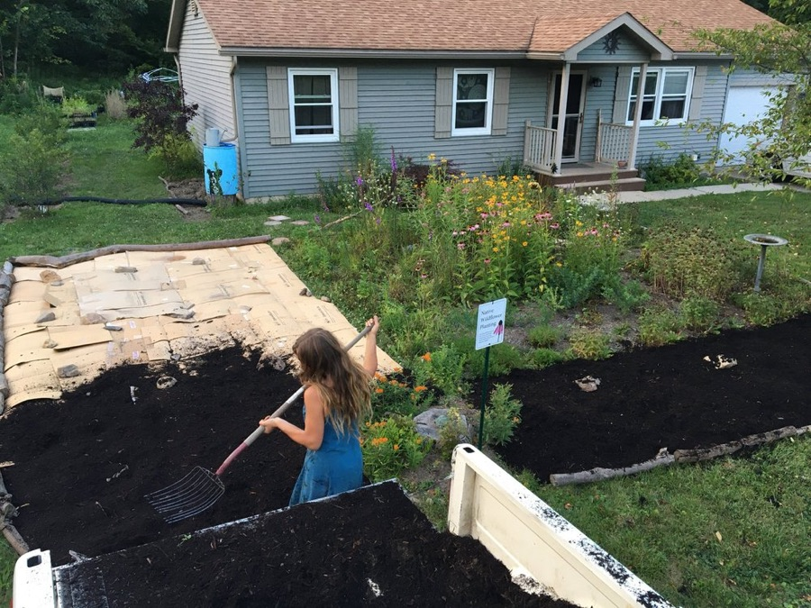
Native perennial wildflowers that bloom across three seasons for butterflies, bees, and birds.
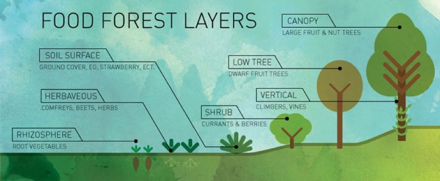
Edible perennials in layered permaculture design for an abundance of low-work food.
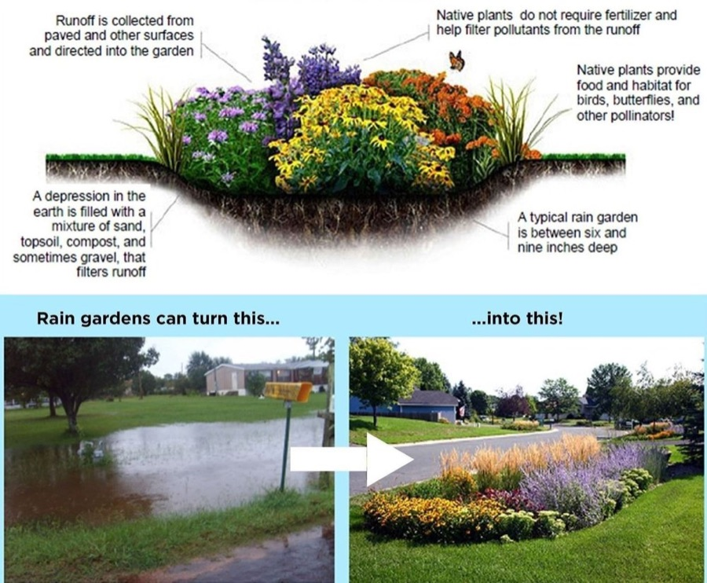
A planted depression that soaks up runoff and blooms with three-season color.
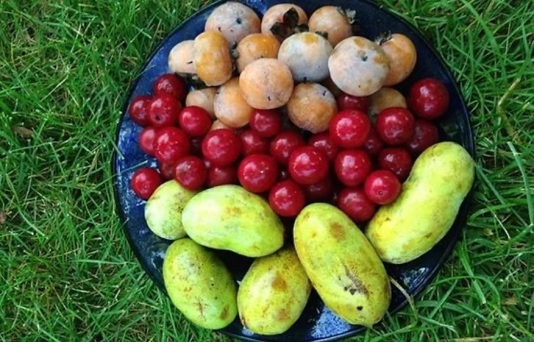
A productive vegetable garden planned around your space, your soil, and how you like to grow.
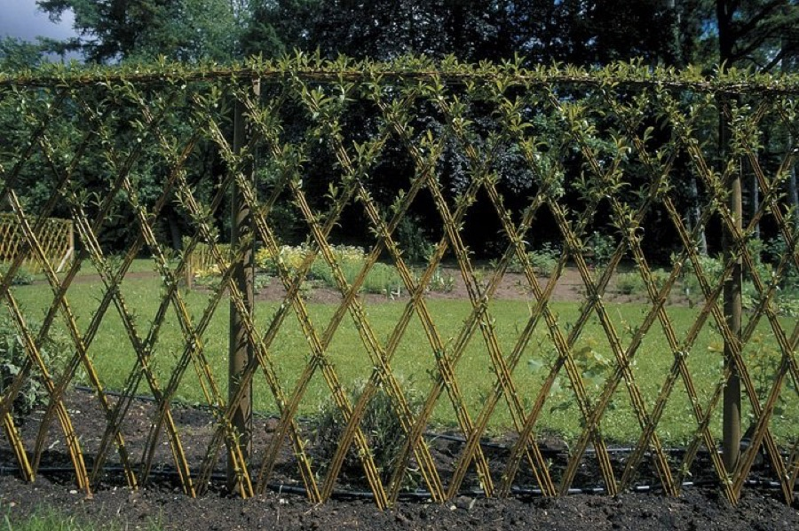
Willow branches planted and woven in March into living fences, tunnels, domes, and archways.
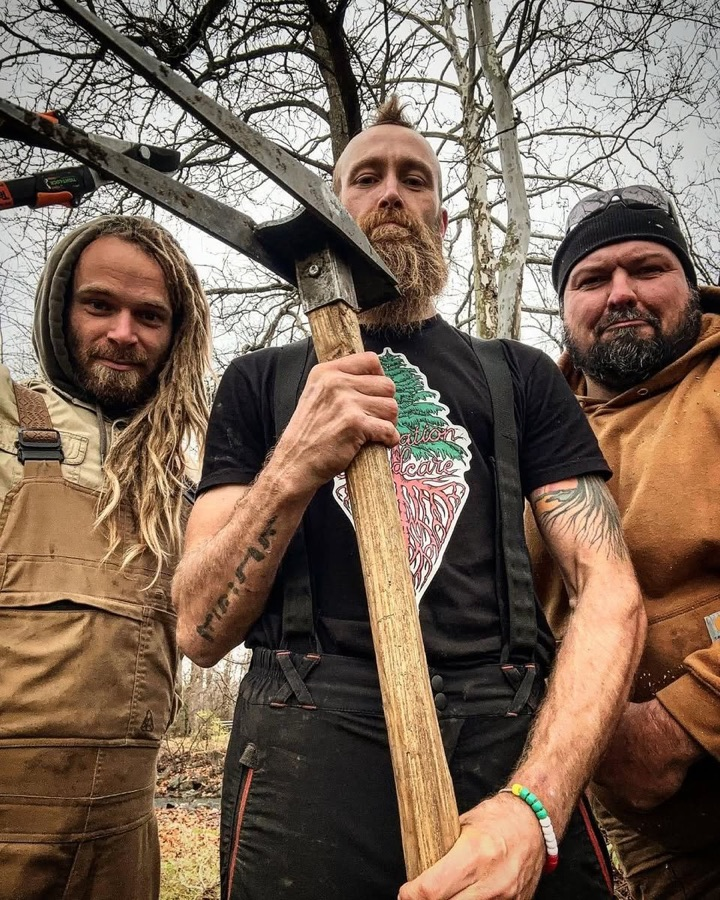
Ongoing care from ecological landscapers who know a native from an invasive weed.
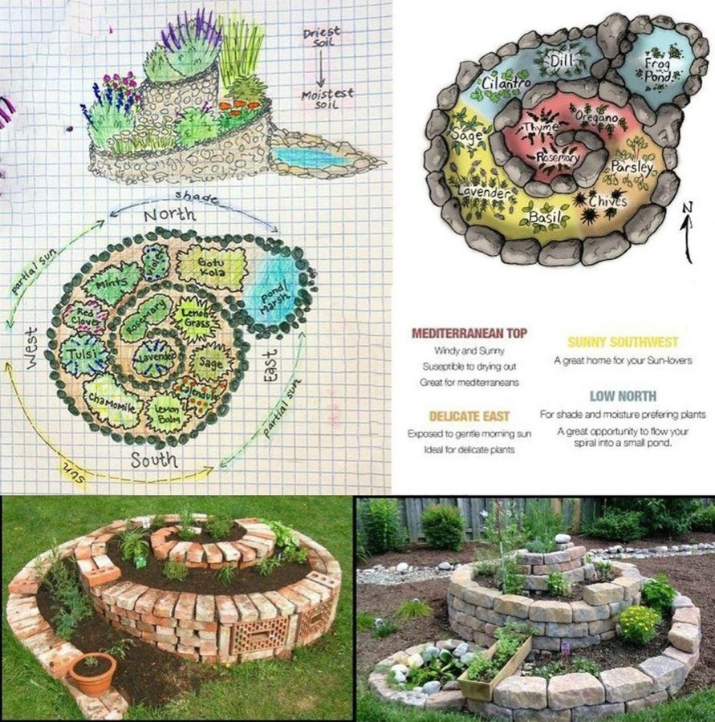
A medicine garden of native and annual healing plants, with herbalist consulting.
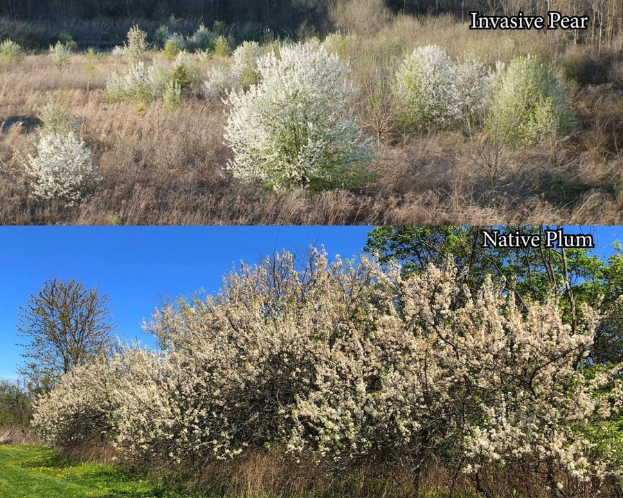
Riparian buffer planting and invasive removal that rebuilds streamside habitat.
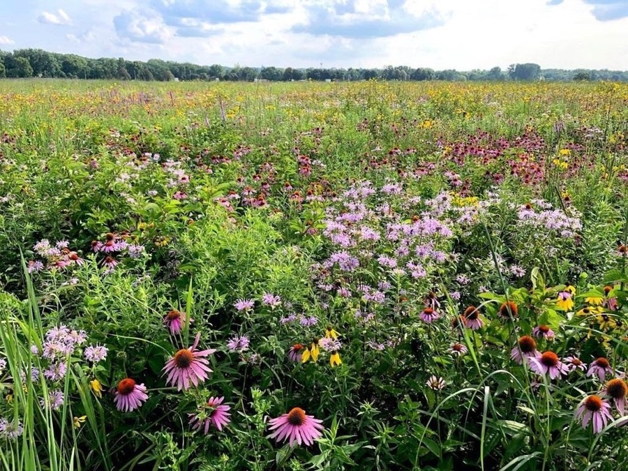
Thinning the canopy and rebuilding the understory for layered, biodiverse woods.
Native plant nursery
Fifty nursery-grown native perennial wildflowers and eleven habitat kits for Central Pennsylvania. Reserve the plants you want for pickup. Nothing is charged online.
Browse native plantsCommunity
We host WildOnes gatherings, native plant sales, and hands-on workdays across Blair County. Come dig in with us.
Growing together
From the Reciprocity Community Food Forest to neighborhood plots, we steward shared spaces where native plants and food grow side by side.
Support the nonprofit
Membership in the Wild Ones Pennsylvania Ridge and Valley chapter directly funds our community gardens, native plant restoration, and free public events across Blair County and beyond. Joining is the single best way to keep this work growing.
Lend a hand
Join a workday, help plant a food forest, or tend a community garden. No experience needed, just a willingness to get your hands in the soil.
Questions welcome
What to plant where, pawpaws, how to get involved, or anything else. No question is too small, and we read every one.
Ask us anything